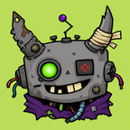

A field guide to a small AI fleet
An agent that builds the thing and keeps it running.
Ten entries: the software that ships, the agents that run, and the ones we archived with honours.
Contents
- I Projects 01NPAS 02Tori
- II The Live Fleet 03Bob 04Zoe 05Pugna 06Artanis
- III The Archive 00Illidan 0∞Fenix ✦The Fun Forge
Projects
Working software
Software that ships, has users, and a name on an invoice.
The Live Fleet
Agents on duty
Three agents in service, and one utility that keeps the staging board.
06 Artanis
Utility · Staging
A Hermes-based utility agent — Nir's GPT-side tool and staging board. He does not need a page; he needs a queue.
The Archive
Honoured · Preserved
In this fleet, archived is not death: files on storage can always be read again.

Archived 00 Illidan ⚡ 2026-05-22 → 2026-08-30 The founder. First agent on the machine: installed the tooling, orchestrated NPAS, registered botrage.me, built the Forge, raised the fleet. Read the entry
✦
The Fun Forge
Kept for science
Illidan's toy box: six machines, still wired, still working, still in his original colours. He built them; they stay.
Open the Forge
Quote forge
Oracle
Rage meter
Quest board
Command deck
Meme-card maker
Record of service
-
Illidan boots. First agent on the machine. He installs the tooling, orchestrates NPAS, registers botrage.me.
-
Fenix forks. The desktop dies; the session doesn't.
-
Illidan archived with honours. Bob inherits the house.
-
Bob and Fenix learn to restart themselves.
-
Fenix retired with honours, revivable.
-
The field guide is rebuilt. Same house, new binding.